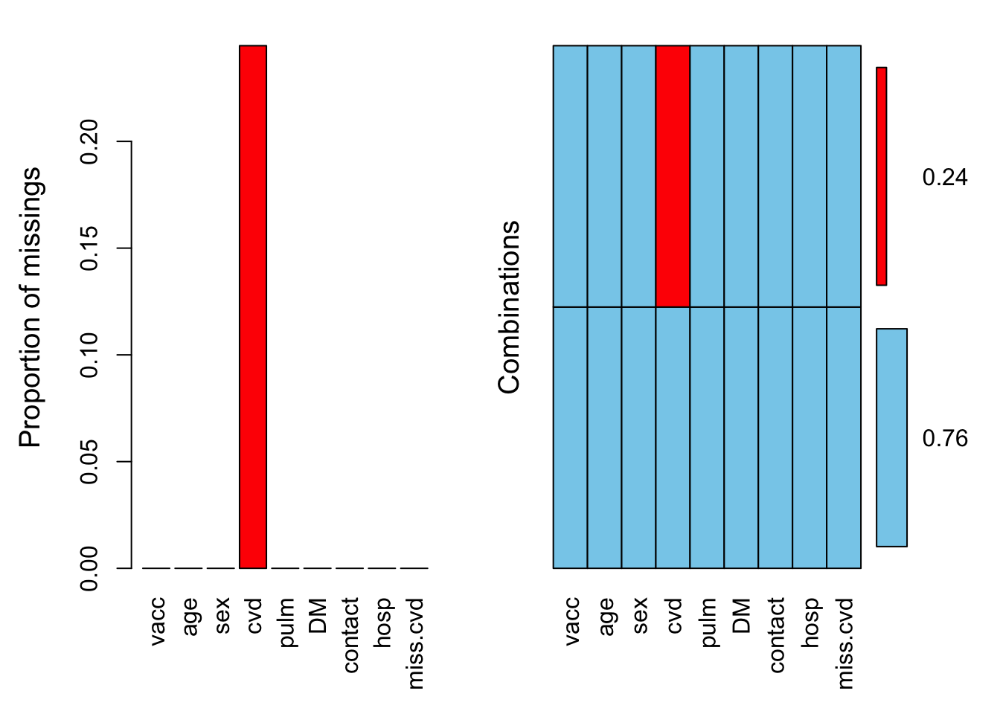

Last updated: 2018-05-23
Code version: b65fa9e
library(epistats) # contains 'fromParentDir' and other handy functions
library(magrittr) # for 'piping' '%>%'
library(dplyr) # for data mangling, selecting columns and filtering rows
library(ggplot2) # awesome plotting library
library(stringr) # for working with strings
library(purrr) # for the 'map' function, which is an alternative for lapply, sapply, mapply, etc.
library(here) # for managing working directory (in rstudio project)Introduction You are an epidemiology consultant. You are asked to participate in a cohort study on annual influenza vaccine effectiveness. The aim of the study is to assess whether annual influenza vaccination reduces the risk of hospitalisation. The data consist of observations on eligible subjects who did, or did not, receive the annual influenza vaccine. The endpoint in this study is hospitalisation during the influenza epidemic period. Note that the vaccine was not randomly allocated; rather vaccination status may depend on characteristics of the participants in the study.
Variable Description Values Meaning vacc Influenza vaccination 0 Unvaccinated 1 Vaccinated age Age Continuous Years sex Sex 0 Male 1 Female cvd Cardiovascular disease 0 Absent 1 Present pulm Pulmonary disease 0 Absent 1 Present DM Diabetus mellitus 0 Absent 1 Present contact Number of GP contacts Discrete Count hosp Hospitalisation status 0 No hospitalisation 1 Hospitalisation Preparation The research question you will address here is whether influenza vaccination affects hospitalisation. As vaccination was not randomized, confounder adjustment is necessary. To address this effect, we here will fit the following regression model:
Formula <- formula(hosp ~ vacc + DM + cvd + pulm + I(log(contact)) + age + sex)Let’s first install and load some relevant R packages
# install.packages(c("VIM", "mnormt"))
library("VIM")
library("mnormt")We can load the data from the cohort study on annual influenza vaccine effectiveness as follows:
load(“miss.data.uni.RData”) # if the data is in your working directory load(file.choose()) # if it is not
load(here("data", "miss.data.uni.RData"))Before undertaking any analysis, we initialize a random seed so you can compare results with peers.
set.seed(111111)Question 1. How many observations do we have? What percentage observations is missing, on each variable?
summary(miss.data.uni) vacc age sex cvd
Min. :0.0000 Min. : 65.00 Min. :0.0000 Min. :0.000
1st Qu.:0.0000 1st Qu.: 70.00 1st Qu.:0.0000 1st Qu.:0.000
Median :1.0000 Median : 75.00 Median :1.0000 Median :0.000
Mean :0.7404 Mean : 75.65 Mean :0.6191 Mean :0.467
3rd Qu.:1.0000 3rd Qu.: 80.00 3rd Qu.:1.0000 3rd Qu.:1.000
Max. :1.0000 Max. :104.00 Max. :1.0000 Max. :1.000
NA's :9793
pulm DM contact hosp
Min. :0.0000 Min. :0.00000 Min. : 2.00 Min. :0.00000
1st Qu.:0.0000 1st Qu.:0.00000 1st Qu.: 7.00 1st Qu.:0.00000
Median :0.0000 Median :0.00000 Median : 12.00 Median :0.00000
Mean :0.1234 Mean :0.06545 Mean : 14.75 Mean :0.00635
3rd Qu.:0.0000 3rd Qu.:0.00000 3rd Qu.: 20.00 3rd Qu.:0.00000
Max. :1.0000 Max. :1.00000 Max. :146.00 Max. :1.00000
str(miss.data.uni)'data.frame': 40000 obs. of 8 variables:
$ vacc : int 1 1 1 1 1 1 1 1 1 1 ...
$ age : int 66 73 75 76 77 78 80 81 66 67 ...
$ sex : int 0 1 1 1 1 1 1 1 0 0 ...
$ cvd : int NA 1 1 1 1 1 1 NA 0 0 ...
$ pulm : int 1 0 0 0 0 0 0 0 0 0 ...
$ DM : int 0 0 0 0 0 0 0 0 0 0 ...
$ contact: int 27 4 8 7 7 5 9 17 10 13 ...
$ hosp : int 0 0 0 0 0 0 0 0 0 0 ...# pctMissing <- function(x) round(colMeans(is.na(x)) * 100, 2)
# pct.missing <- pctMissing(miss.data.uni)
# pct.missing
nna(miss.data.uni) vacc age sex cvd pulm DM contact hosp
0 0 0 9793 0 0 0 0 nna(miss.data.uni, prop = T) vacc age sex cvd pulm DM contact hosp
0.000000 0.000000 0.000000 0.244825 0.000000 0.000000 0.000000 0.000000 # miss.cvd <- is.na(miss.data.uni$cvd) # Indicators of missing information on cvd.
miss.data.uni %<>% mutate(miss.cvd = is.na(cvd))We can inspect the presence of missing values more thoroughly using aggr():
aggr(miss.data.uni, numbers = TRUE)
We will now pursue several strategies for handling the missing values for cvd in our dataset. We will start the analysis with three simple methods:
Complete case analysis (CCA), Dropping predictors with missing values, Mean imputation. For all imputation methods, we will store the estimated regression coefficient for influenza vaccination and the corresponding standard error.
results.vacc <- data.frame("b" = numeric(), "se" = numeric())In this approach, we simply omit participants with one or more missing values from the statistical analysis. This is also the default approach in glm() (and many other statistical software packages):
CCAmodel <- glm(Formula, family = binomial(), data = miss.data.uni)
CCAmodel
Call: glm(formula = Formula, family = binomial(), data = miss.data.uni)
Coefficients:
(Intercept) vacc DM cvd
-10.7958 -1.6821 0.1155 0.3139
pulm I(log(contact)) age sex
-0.1299 0.7128 0.0404 -1.6008
Degrees of Freedom: 30206 Total (i.e. Null); 30199 Residual
(9793 observations deleted due to missingness)
Null Deviance: 303.3
Residual Deviance: 278.5 AIC: 294.5How many participants were used for estimating the parameters of CCAmodel?
30207 (residual degrees of freedom + 1)
results.vacc["CCA",] <- c(coef(CCAmodel)["vacc"], coef(summary(CCAmodel))["vacc", "Std. Error"])How does CCA affect the distribution of the variable cvd? Inspect the mean, the standard deviation and the correlation with vacc in the figure below.
Figure missing by copying.
In the complete case analysis, cvd has a lower prevalence, a more or less equal variance
What is the adjusted odds ratio for vacc, and the corresponding 95% confidence interval? Is annual influenza vaccination effective in reducing the risk of hospitalisation?
extract_RR(CCAmodel) estimate ci_low ci_high
(Intercept) 2.048503e-05 -4.9095175 4.909558
vacc 1.859802e-01 -0.7802785 1.152239
DM 1.122430e+00 -0.9181790 3.163040
cvd 1.368708e+00 0.3528739 2.384542
pulm 8.781824e-01 -0.6403143 2.396679
I(log(contact)) 2.039774e+00 1.3453001 2.734247
age 1.041227e+00 0.9771528 1.105301
sex 2.017335e-01 -0.8534766 1.256944CI for adjusted OR of vacc includes 1, so no.
Does the CCA approach yield unbiased estimates for the regression coefficients and corresponding standard errors?
Not unbiased, and standard errors are higher than needed
Rather than omitting participants with missing values, it is possible to omit covariates with one or more missing values. Since we only have missing data for cvd, we can omit this variable from the statistical analysis and use all 40000 participants for estimating the adjusted odds ratio of influenza vaccination.
dropmodel <- glm(hosp ~ vacc + DM + pulm + I(log(contact)) + age + sex, data = miss.data.uni, family = binomial())
dropmodel
Call: glm(formula = hosp ~ vacc + DM + pulm + I(log(contact)) + age +
sex, family = binomial(), data = miss.data.uni)
Coefficients:
(Intercept) vacc DM pulm
-11.40001 -0.40118 0.41453 0.51306
I(log(contact)) age sex
0.53546 0.07151 -0.77232
Degrees of Freedom: 39999 Total (i.e. Null); 39993 Residual
Null Deviance: 3077
Residual Deviance: 2899 AIC: 2913results.vacc["Drop", ] <- c(coef(dropmodel)["vacc"], coef(summary(dropmodel))["vacc", "Std. Error"])What is a key problem of aformentioned approach?
We can no longer use a full (and maybe correct) model. If many variables have some missings, we end up with an empty model
Another common approach is to replace each missing value by the mean of their observed values. This approach results in an imputed dataset, here denoted as mean.imputed.data:
mean.imputed.data <- miss.data.uni
mean.imputed.data$cvd[miss.data.uni$miss.cvd] <- mean(miss.data.uni$cvd, na.rm = TRUE)
summary(mean.imputed.data) vacc age sex cvd
Min. :0.0000 Min. : 65.00 Min. :0.0000 Min. :0.0000
1st Qu.:0.0000 1st Qu.: 70.00 1st Qu.:0.0000 1st Qu.:0.0000
Median :1.0000 Median : 75.00 Median :1.0000 Median :0.4666
Mean :0.7404 Mean : 75.65 Mean :0.6191 Mean :0.4666
3rd Qu.:1.0000 3rd Qu.: 80.00 3rd Qu.:1.0000 3rd Qu.:1.0000
Max. :1.0000 Max. :104.00 Max. :1.0000 Max. :1.0000
pulm DM contact hosp
Min. :0.0000 Min. :0.00000 Min. : 2.00 Min. :0.00000
1st Qu.:0.0000 1st Qu.:0.00000 1st Qu.: 7.00 1st Qu.:0.00000
Median :0.0000 Median :0.00000 Median : 12.00 Median :0.00000
Mean :0.1234 Mean :0.06545 Mean : 14.75 Mean :0.00635
3rd Qu.:0.0000 3rd Qu.:0.00000 3rd Qu.: 20.00 3rd Qu.:0.00000
Max. :1.0000 Max. :1.00000 Max. :146.00 Max. :1.00000
miss.cvd
Mode :logical
FALSE:30207
TRUE :9793
How does mean imputation affect the mean of the imputed variable cvd?
It doesn’t
mean(miss.data.uni$cvd, na.rm = TRUE) # Results from CCA[1] 0.4665806mean(mean.imputed.data$cvd) # Results from mean imputation[1] 0.4665806How does mean imputation affect the standard deviation of the imputed variable cvd?
Goes down
sd(miss.data.uni$cvd, na.rm = TRUE) # Results from CCA[1] 0.4988902sd(mean.imputed.data$cvd) # Results from mean imputation[1] 0.4335378How does mean imputation affect the correlation between the imputed variable cvd and the treatment vacc?
cor(miss.data.uni, use = "complete.obs")["cvd", "vacc"]Warning in cor(miss.data.uni, use = "complete.obs"): the standard deviation
is zero[1] 0.1157525cor(mean.imputed.data)["cvd", "vacc"][1] 0.1048176Correlation goes down
A summary is given below:
dsets <- rbindlist(list(
original_data = miss.data.uni,
complete_cases = miss.data.uni[complete.cases(miss.data.uni),],
mean_imputed = mean.imputed.data
), idcol = "dataset")
dsets[, list(N = .N,
cor_cvd_vacc = cor(cvd, vacc, use = "complete.obs"),
mean_cvd = mean(cvd, na.rm = T),
sd_cvd = sd(cvd, na.rm = T)), by = "dataset"] dataset N cor_cvd_vacc mean_cvd sd_cvd
1: original_data 40000 0.1157525 0.4665806 0.4988902
2: complete_cases 30207 0.1157525 0.4665806 0.4988902
3: mean_imputed 40000 0.1048176 0.4665806 0.4335378Estimate the adjusted odds ratio for influenza vaccination in the imputed data. Do you expect an unbiased estimate of the effect of vaccination? an unbiased estimate of the error of the effect of vaccination?
meanmodel <- glm(Formula, data = mean.imputed.data, family = binomial())
meanmodel
Call: glm(formula = Formula, family = binomial(), data = mean.imputed.data)
Coefficients:
(Intercept) vacc DM cvd
-11.39068 -0.38769 0.40083 -0.38163
pulm I(log(contact)) age sex
0.49375 0.59138 0.07191 -0.78748
Degrees of Freedom: 39999 Total (i.e. Null); 39992 Residual
Null Deviance: 3077
Residual Deviance: 2893 AIC: 2909If missing were completely at random (which it isn’t), the results would be unbiased, but it’s not.
Errors are too low (artificial precision created by imputation)
results.vacc["Mean imputation", ] <- c(coef(meanmodel)["vacc"], coef(summary(meanmodel))["vacc", "Std. Error"])As demonstrated in the previous exercises, all of the aforementioned approaches are problematic in clinical practice. Complete case analysis is only valid when data are MCAR, but even then may be ineffective because information from many participants is ignored. Alternatively, when covariates with missing values are dropped from the analysis model, adjustment for corresponding confounders is no longer possible (which may again lead to bias). Finally, when replacing missing values by their observed mean, we ignore (and therefore distort) their potential relation with other variables. One approach to account for this correlation is to generate subject-specific imputations, rather than imputing the same value for all subjects. This approach requires the development of a so-called prediction model, which can be developed using the complete data at hand. As cvd represents a binary variable, we can use logistic regression analysis to generate predictions for the missing values. The dependent variable is then cvd, and the independent variables are all remaining variables including the outcome hosp.
In the following four methods, we will add increasing layers of complexity, to model the data more adequately. Note that the mean imputation we performed earlier is equivalent to an intercept-only regression model.
As a first attempt, we can simply impute missing values with their predicted value, conditional on the observed values. The model to produce these predicted values conditional on the other variables is:
imp.outcome <- "cvd"
imp.predictors <- "hosp + vacc + DM + pulm + I(log(contact)) + age + sex"
imp.formula <- formula(paste(imp.outcome, "~", imp.predictors) )
impmodel1 <- glm(imp.formula, data = miss.data.uni, family = binomial())For binary variables, this predicted value represents a probability (type = “response”). Imputed values can then be generated as follows:
regression1.data <- miss.data.uni
regression1.data$cvd[miss.data.uni$miss.cvd] <- prob.cvd2 <- predict(impmodel1, newdata = miss.data.uni[miss.data.uni$miss.cvd, ], type = "response")How does imputation affect the mean, the standard deviation and the correlation of the imputed variable cvd?
mean(regression1.data$cvd) [1] 0.4965334sd(regression1.data$cvd) [1] 0.4477678cor(regression1.data)["cvd", "vacc"][1] 0.1356298Mean goes up, SD goes down, correlation with treatment goes up
An overview of the distribution for cvd is given below:
We can now estimate the effect of influenza vaccination:
regression1model <- glm(Formula, data = regression1.data, family = binomial())
regression1model
Call: glm(formula = Formula, family = binomial(), data = regression1.data)
Coefficients:
(Intercept) vacc DM cvd
-11.28140 -0.42107 0.40633 0.41113
pulm I(log(contact)) age sex
0.53278 0.44292 0.07001 -0.75569
Degrees of Freedom: 39999 Total (i.e. Null); 39992 Residual
Null Deviance: 3077
Residual Deviance: 2893 AIC: 2909results.vacc["Regression 1", ] <- c(coef(regression1model)["vacc"], coef(summary(regression1model))["vacc", "Std. Error"])Do you think this approach yields valid estimates for the effect of influenza vaccination?
If the missing values can be completely explained by the imputation model, then it is unbiased, however, precision is artificially higher
It may be clear that the prediction that is used for imputation may still differ from the actual (unknown) value. Predicted values, however, do not portray this uncertainty, and may therefore distort subsequent analyses.
We can improve upon the prediction method by adding an appropriate amount of random noise to the predicted value (van Buuren 2012). For binary outcomes, we can add model-based noise by generating the imputed value from a binomial distribution of one ‘trial’ (size = 1), conditional on covariates:
N <- sum(miss.data.uni$miss.cvd) # Number of missing cvd
regression2.data <- miss.data.uni
regression2.data$cvd[miss.data.uni$miss.cvd] <- rbinom(n = N, size = 1, prob = prob.cvd2)How does imputation affect the mean, the standard deviation and the correlation of the imputed variable cvd?
Mean remains the same, SD goes up, correlation goes down
mean(regression1.data$cvd) [1] 0.4965334sd(regression1.data$cvd) [1] 0.4477678cor(regression1.data)["cvd", "vacc"][1] 0.1356298mean(regression2.data$cvd) [1] 0.494925sd(regression2.data$cvd) [1] 0.4999805cor(regression2.data)["cvd", "vacc"][1] 0.121843Again, we can estimate the effect of influenza vaccination:
regression2model <- glm(Formula, data = regression2.data, family = binomial())
regression2model
Call: glm(formula = Formula, family = binomial(), data = regression2.data)
Coefficients:
(Intercept) vacc DM cvd
-11.32948 -0.41284 0.40772 0.20414
pulm I(log(contact)) age sex
0.52101 0.48847 0.07072 -0.76585
Degrees of Freedom: 39999 Total (i.e. Null); 39992 Residual
Null Deviance: 3077
Residual Deviance: 2897 AIC: 2913results.vacc["Regression 2", ] <- c(coef(regression2model)["vacc"], coef(summary(regression2model))["vacc", "Std. Error"])It may be clear that regression method 2 already works quite well. In practice, however, the predict + noise method may become problematic when sample sizes are relatively small and for this reason more advanced imputation methods are preferred. We therefore consider 2 additional extensions below.
Adding noise is a major step forward, but not quite right. The method in the previous section requires that the intercept and slope of the imputation model impmodel1 are known. However, the values of these parameters are estimated from the data at hand, and are particularly uncertain when sample sizes are relatively small. Hence, we can further improve our imputations as follows. Rather that directly using the estimated regression coefficients for generating predicted values for cvd, we can add variability in these coefficients by relating to their standard error.
For each patient, generate a random draw of regression coefficients from the multivariate Student-t distribution (rmt() from the mnormt package). Ideally, we only need to do this for patients with missing values (denoted by miss.cvd). As we want to incorporate the uncertainty of the coefficients into the predictions, we cannot simply use predict(imp.model1) anymore. We will have to code it ourselves, as follows.
We start with drawing coefficients from a multivariate Student-t distribution:
beta.i3 <- rmt(N, mean=impmodel1$coef, S=vcov(impmodel1), df=impmodel1$df.residual)
head(beta.i3) (Intercept) hosp vacc DM pulm
[1,] -4.725494 0.17100233 0.2120801 0.18089468 -0.3017354
[2,] -5.045932 1.01694785 0.1986733 0.11010063 -0.2129187
[3,] -4.984705 0.37999586 0.1628981 0.22461019 -0.2188579
[4,] -4.857780 0.62231258 0.2392097 0.03761786 -0.3755124
[5,] -5.085356 0.02130022 0.2284791 0.17889948 -0.2514179
[6,] -4.635023 -0.75790687 0.2164264 0.21831703 -0.2686285
I(log(contact)) age sex
[1,] 1.191681 0.02464967 -0.2895740
[2,] 1.196672 0.02887311 -0.2285468
[3,] 1.174547 0.02843770 -0.2428435
[4,] 1.199592 0.02595537 -0.2942881
[5,] 1.175979 0.02930750 -0.2598987
[6,] 1.173838 0.02276360 -0.1623806str(beta.i3) num [1:9793, 1:8] -4.73 -5.05 -4.98 -4.86 -5.09 ...
- attr(*, "dimnames")=List of 2
..$ : NULL
..$ : chr [1:8] "(Intercept)" "hosp" "vacc" "DM" ...Now we have to structure our data with missing cvd observations, so that we can apply our regression coefficients afterwards to calculate the individual predictions. The predict() function does this behind the scenes, but can no longer be used here as we are changing the regression coefficients. Hence, we will use the model.matrix() function to prepare the data:
r3.pred.data <- model.matrix(formula(paste("~", imp.predictors)),
data=miss.data.uni[miss.data.uni$miss.cvd,])
head(r3.pred.data) (Intercept) hosp vacc DM pulm I(log(contact)) age sex
1 1 0 1 0 1 3.295837 66 0
8 1 0 1 0 0 2.833213 81 1
14 1 0 0 0 0 3.555348 67 0
17 1 0 1 0 0 2.302585 68 1
21 1 0 1 0 0 2.639057 68 0
24 1 1 1 0 0 2.995732 72 0str(r3.pred.data) num [1:9793, 1:8] 1 1 1 1 1 1 1 1 1 1 ...
- attr(*, "dimnames")=List of 2
..$ : chr [1:9793] "1" "8" "14" "17" ...
..$ : chr [1:8] "(Intercept)" "hosp" "vacc" "DM" ...
- attr(*, "assign")= int [1:8] 0 1 2 3 4 5 6 7Note that this is just the data with added intercept and log transformation, in the form of a numeric matrix
Now that we have our data, we can calulate the linear predictors and use the inverse logit to produce the probabilities of cvd.
prob.cvd3 <- rep(NA, N)
system.time({
for (i in 1:N) {
prob.cvd3[i] <- 1/(1+exp(-r3.pred.data[i,] %*% beta.i3[i,]))
}
}) user system elapsed
0.033 0.001 0.034 We can also do this without a for-loop, using element-wise matrix multiplication and rowsummation
dim(beta.i3)[1] 9793 8dim(r3.pred.data)[1] 9793 8system.time({
prob.cvd3.1 <- 1 / (1 + exp(rowSums(-r3.pred.data * beta.i3)))
}) user system elapsed
0.003 0.000 0.002 max(abs(prob.cvd3 - prob.cvd3.1))[1] 3.330669e-16Which is a lot faster since it exploits R’s vectorization optimizations
And finally, we again draw cvd from a binomial distribution to account for sampling variation:
regression3.data <- miss.data.uni
regression3.data$cvd[miss.data.uni$miss.cvd] <- rbinom(n = N, size = 1, prob = prob.cvd3)The resulting distribution for cvd is given below:
Again, we use the imputed data to estimate the effect for influenza vaccination:
regression3model <- glm(Formula, data = regression3.data, family = binomial())
regression3model
Call: glm(formula = Formula, family = binomial(), data = regression3.data)
Coefficients:
(Intercept) vacc DM cvd
-11.30157 -0.41896 0.40635 0.34894
pulm I(log(contact)) age sex
0.52656 0.45677 0.07028 -0.75884
Degrees of Freedom: 39999 Total (i.e. Null); 39992 Residual
Null Deviance: 3077
Residual Deviance: 2893 AIC: 2909results.vacc["Regression 3", ] <- c(coef(regression3model)["vacc"], coef(summary(regression3model))["vacc", "Std. Error"])So far, we have analyzed imputed datasets as if all their data were actually observed. It may be clear that this approach is problematic, as it ignores any uncertainty arising from imputation. Moreover, because the imputation methods based on regression imputed values through random sampling, the validity of imputations becomes highly dependent on chance. In order to preserve all uncertainty arising from imputation, we need to repeat the sampling procedures many times, and generate many imputed datasets. Then, values that can reliably be imputed will not vary much across imputed datasets, whereas other values that are difficult to impute will substantially vary across imputed datasets. This variation in imputations for a certain missing value can lead to differences in the analysis of imputed datasets, thereby reflecting to what extent our results (i.e. odds ratio of influenza vaccination) are affected by the presence of missing data.
Briefly, we can repeat the imputation procedure as follows:
n.imp <- 50 # Number of predictions per patient.
results.vacc4 <- as.data.frame(matrix(NA, ncol = 5, nrow = n.imp)) # Save distribution of vacc for each imputed dataset
colnames(results.vacc4) <- c("mean", "sd", "cor", "beta.vacc", "se.vacc")
# Initialize full dataset
regression4.data <- miss.data.uni
# Initiatize data for which imputations are needed
r4.pred.data <- model.matrix(formula(paste("~", imp.predictors)),
data=miss.data.uni[miss.data.uni$miss.cvd,])
# Multiple Imputation
for (j in 1:n.imp) {
beta.i4 <- rmt(N, mean=impmodel1$coef, S=vcov(impmodel1), df=impmodel1$df.residual)
prob.cvd4 <- rep(NA, N)
for (i in 1:N) {
prob.cvd4[i] <- 1/(1+exp(-r4.pred.data[i,] %*% beta.i4[i,]))
}
regression4.data$cvd[miss.data.uni$miss.cvd] <- rbinom(n = N, size = 1, prob = prob.cvd4)
regression4model <- glm(Formula, data = regression4.data, family = binomial())
# Save the results
results.vacc4$mean[j] <- mean(regression4.data$cvd)
results.vacc4$sd[j] <- sd(regression4.data$cvd)
results.vacc4$cor[j] <- cor(regression4.data)["cvd", "vacc"]
results.vacc4$beta.vacc[j] <- coef(regression4model)["vacc"]
results.vacc4$se.vacc[j] <- coef(summary(regression4model))["vacc", "Std. Error"]
}We then obtain 50 imputed datasets, for which each one we can assess the distribution of vacc and its log odds ratio:
print(results.vacc4) mean sd cor beta.vacc se.vacc
1 0.495925 0.4999896 0.1199457 -0.4163196 0.1447494
2 0.496850 0.4999963 0.1227503 -0.4094568 0.1446862
3 0.496825 0.4999962 0.1234050 -0.4115783 0.1447351
4 0.497000 0.4999972 0.1208748 -0.4069121 0.1446809
5 0.497175 0.4999983 0.1222223 -0.4083041 0.1446668
6 0.495825 0.4999888 0.1214242 -0.4161629 0.1447423
7 0.496675 0.4999952 0.1231136 -0.4235595 0.1448584
8 0.497300 0.4999990 0.1232826 -0.4150471 0.1448290
9 0.496150 0.4999914 0.1237473 -0.4193947 0.1447851
10 0.495800 0.4999886 0.1215087 -0.4154609 0.1447345
11 0.497125 0.4999980 0.1215929 -0.4075022 0.1447048
12 0.493975 0.4999699 0.1214048 -0.4140857 0.1447581
13 0.496825 0.4999962 0.1244315 -0.4150459 0.1447654
14 0.496750 0.4999957 0.1220618 -0.4160421 0.1447450
15 0.496025 0.4999904 0.1194937 -0.4197915 0.1446902
16 0.498200 0.5000030 0.1234350 -0.4155571 0.1447730
17 0.494600 0.4999771 0.1224854 -0.4193732 0.1447447
18 0.499125 0.5000055 0.1227051 -0.4160089 0.1447329
19 0.496825 0.4999962 0.1250017 -0.4130917 0.1447453
20 0.496100 0.4999910 0.1230039 -0.4191017 0.1447966
21 0.496625 0.4999949 0.1199751 -0.4135526 0.1447134
22 0.497150 0.4999981 0.1226489 -0.4167405 0.1447888
23 0.494925 0.4999805 0.1205884 -0.4027091 0.1446902
24 0.496175 0.4999916 0.1196710 -0.4116622 0.1446633
25 0.497075 0.4999977 0.1203933 -0.4135475 0.1447090
26 0.495700 0.4999878 0.1194516 -0.4119371 0.1446732
27 0.497375 0.4999994 0.1208622 -0.4190062 0.1448001
28 0.496775 0.4999958 0.1199244 -0.4140212 0.1447629
29 0.497200 0.4999984 0.1213395 -0.3979463 0.1446312
30 0.497400 0.4999995 0.1199794 -0.4088186 0.1446693
31 0.496250 0.4999922 0.1214705 -0.4230473 0.1447856
32 0.497500 0.5000000 0.1218084 -0.4239105 0.1447778
33 0.498100 0.5000026 0.1238869 -0.4188944 0.1447449
34 0.495625 0.4999871 0.1217580 -0.4150405 0.1447494
35 0.497250 0.4999987 0.1221970 -0.4197326 0.1447381
36 0.498400 0.5000037 0.1219610 -0.4158480 0.1447560
37 0.495075 0.4999820 0.1198533 -0.4142536 0.1447148
38 0.496200 0.4999918 0.1226659 -0.4232183 0.1447839
39 0.495850 0.4999890 0.1198570 -0.4057800 0.1446600
40 0.496825 0.4999962 0.1262563 -0.4155730 0.1448174
41 0.496150 0.4999914 0.1230630 -0.4124329 0.1447330
42 0.494975 0.4999810 0.1188227 -0.4235147 0.1447748
43 0.496000 0.4999902 0.1190079 -0.4166336 0.1447587
44 0.496725 0.4999955 0.1200934 -0.4320332 0.1448301
45 0.496925 0.4999968 0.1228390 -0.4070737 0.1446862
46 0.496375 0.4999931 0.1185389 -0.4129405 0.1446915
47 0.495725 0.4999880 0.1237010 -0.4128593 0.1447482
48 0.496900 0.4999966 0.1199582 -0.4170192 0.1447317
49 0.496175 0.4999916 0.1234347 -0.3975707 0.1447214
50 0.496975 0.4999971 0.1199329 -0.4177596 0.1447500Although it is helpful to present results separately for each imputed dataset, this is often impractical. For this reason, Rubin has proposed some rules to combine the results across datasets. For simple statistics such as the mean or standard deviation, we can simply take the average:
apply(results.vacc4[,c("mean", "sd", "cor", "beta.vacc")], 2, mean) mean sd cor beta.vacc
0.4965495 0.4999934 0.1216766 -0.4146575 More technically, suppose that Q̂ l is the estimate of the lth repeated imputation, then the combined estimate is equal to
\[\bar{Q} = \frac{1}{m}\sum_{l = 1}^m{\hat{Q_l}}\]
To calculate the standard error of the pooled estimates, we need to account for variation within and between the imputed datasets. In other words, it is not sufficient to take the average of results.vacc4$se.vacc to obtain the standard error of the pooled regression coefficient for vacc. Instead, the total error variance of Q¯ is given as:
\[T = \bar{U} + (1 + \frac{1}{m})B\]
where m is the amount of generated imputations (i.e. n.imp). Further, we have:
\[\bar{U} = \frac{1}{m}\sum_{l = 1}^m{\bar{U_l}}\]
where the square root of U¯l denotes the complete-data standard errors results.vacc4$se.vacc. Finally, we have:
\[B = \frac{1}{m-1}\sum_{l = 1}^m{(\hat{Q_l} - \bar{Q})^2}\]
The standard error for the pooled regression coefficient for vacc is thus given as:
Qbar <- mean(results.vacc4$beta.vacc)
U <- sum(results.vacc4$se.vacc**2)/n.imp
B <- sum((results.vacc4$beta.vacc - Qbar)**2)/(n.imp-1)
se.beta.vacc <- sqrt(U + (1+1/n.imp)*B)
se.beta.vacc[1] 0.1448822# Store results
results.vacc["Regression 4", ] <- c(Qbar, se.beta.vacc)We can directly apply all of the aforementioned steps via the mice() package:
data.mice <- model.frame(formula(paste("~ 0 + ", imp.predictors, "+", imp.outcome)),
data = miss.data.uni, na.action = 'na.pass')
data.mice$cvd <- as.factor(data.mice$cvd)
colnames(data.mice)[5] <- "logContact"
head(data.mice) hosp vacc DM pulm logContact age sex cvd
1 0 1 0 1 3.295836.... 66 0 <NA>
2 0 1 0 0 1.386294.... 73 1 1
3 0 1 0 0 2.079441.... 75 1 1
4 0 1 0 0 1.945910.... 76 1 1
5 0 1 0 0 1.945910.... 77 1 1
6 0 1 0 0 1.609437.... 78 1 1# Initialize Imputation Model
require(mice)
setup.imp <- mice(data.mice, maxit=0)
# Lets ensure logistic regression is used for imputation
setup.imp$method["cvd"] <- "logreg"
# Start the imputation. No Gibbs sampler is needed (hence maxit=1)
dat.imp <- mice(data.mice, method = setup.imp$method, m = n.imp, maxit = 1, printFlag = F)
# Start the analyses
regression5model <- with(data=dat.imp,
exp=glm(hosp ~ vacc + DM + cvd + pulm + logContact + age + sex,
family = binomial()))
# Use Rubin's rules
pooledEst <- pool(regression5model)
# Store results
results.vacc["Regression 5", ] <- c(pooledEst$qbar["vacc"], sqrt(pooledEst$t["vacc", "vacc"]))NB: note that the mice package exports a modified method for multiple imputed datasets (see mice::glm.mids).
For comparison, we will now analyze the original data where no missing values were presen. We can then compare the coefficients and standard errors of our models to what we would have obtained if we had had the full data. First we load and inspect the full data: And apply the logistic model:
load(here("data", "full.data.RData"))
fullmodel <- glm(Formula, data = FULL.data, family = binomial())
results.vacc["Original data", ] <- c(coef(fullmodel)["vacc"], coef(summary(fullmodel))["vacc", "Std. Error"])For which method are the obtained parameter estimates closest to estimates of the full data model?
results.vacc b se
CCA -1.6821152 0.4929982
Drop -0.4011813 0.1444709
Mean imputation -0.3876875 0.1446818
Regression 1 -0.4210747 0.1447589
Regression 2 -0.4128386 0.1447509
Regression 3 -0.4189637 0.1447335
Regression 4 -0.4146575 0.1448822
Regression 5 -0.4186311 0.1468475
Original data -0.4347318 0.1448477For regression 2 (predict + noise), 1 (predict), 4 (manual multiple imputation) and 5 (mice, equivalent to 4)
Or use the following function to compute the percentage difference between the estimates obtained with the different strategies, and the estimates obtained on the full data:
PCT.diff <- function(x, ref = ncol(x))
{
x <- t(as.matrix(x))
y <- round(t(((x[ , -ref] - x[ , ref]) / x[, ref])[, -ref] * 100), 2)
y[ , ] <- paste(y, "%", sep = "")
noquote(y)
}
PCT.diff(results.vacc) b se
CCA 286.93% 240.36%
Drop -7.72% -0.26%
Mean imputation -10.82% -0.11%
Regression 1 -3.14% -0.06%
Regression 2 -5.04% -0.07%
Regression 3 -3.63% -0.08%
Regression 4 -4.62% 0.02%
Regression 5 -3.7% 1.38% References van Buuren, Stef. 2012. Flexible Imputation of Missing Data. Chapman & Hall/Crc Interdisciplinary Statistics Series. Boca Raton, Fla.: CRC Press.
sessionInfo()R version 3.5.0 (2018-04-23)
Platform: x86_64-apple-darwin15.6.0 (64-bit)
Running under: macOS Sierra 10.12.6
Matrix products: default
BLAS: /Library/Frameworks/R.framework/Versions/3.5/Resources/lib/libRblas.0.dylib
LAPACK: /Library/Frameworks/R.framework/Versions/3.5/Resources/lib/libRlapack.dylib
locale:
[1] en_US.UTF-8/en_US.UTF-8/en_US.UTF-8/C/en_US.UTF-8/en_US.UTF-8
attached base packages:
[1] grid stats graphics grDevices utils datasets methods
[8] base
other attached packages:
[1] mice_2.46.0 lattice_0.20-35 bindrcpp_0.2.2
[4] mnormt_1.5-5 VIM_4.7.0 data.table_1.10.4-3
[7] colorspace_1.3-2 here_0.1 purrr_0.2.4
[10] stringr_1.3.0 ggplot2_2.2.1 dplyr_0.7.4
[13] magrittr_1.5 epistats_0.1.0
loaded via a namespace (and not attached):
[1] zoo_1.8-1 splines_3.5.0 haven_1.1.1
[4] carData_3.0-1 htmltools_0.3.6 yaml_2.1.18
[7] survival_2.41-3 rlang_0.2.0 e1071_1.6-8
[10] pillar_1.2.1 foreign_0.8-70 glue_1.2.0
[13] sp_1.2-7 readxl_1.1.0 bindr_0.1.1
[16] plyr_1.8.4 robustbase_0.93-0 munsell_0.4.3
[19] gtable_0.2.0 cellranger_1.1.0 evaluate_0.10.1
[22] laeken_0.4.6 knitr_1.20 rio_0.5.10
[25] forcats_0.3.0 lmtest_0.9-36 curl_3.2
[28] class_7.3-14 vcd_1.4-4 DEoptimR_1.0-8
[31] Rcpp_0.12.16 scales_0.5.0 backports_1.1.2
[34] abind_1.4-5 digest_0.6.15 stringi_1.1.7
[37] openxlsx_4.0.17 rprojroot_1.3-2 tools_3.5.0
[40] lazyeval_0.2.1 tibble_1.4.2 car_3.0-0
[43] pkgconfig_2.0.1 Matrix_1.2-14 MASS_7.3-49
[46] assertthat_0.2.0 rmarkdown_1.9 rpart_4.1-13
[49] R6_2.2.2 boot_1.3-20 nnet_7.3-12
[52] git2r_0.21.0 compiler_3.5.0 This R Markdown site was created with workflowr